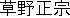
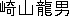

|
Name (Japanese) |
Name (English) |
Instrument |
Place of Birth |
Blood Type |
|
 |
Kusano Masamune |
vocals, guitar |
Fukuoka pref., Fukuoka city |
O |
|
Miwa Tetsuya |
guitar |
Shizuoka pref., Fujieda city |
B |
|
|
Tamura Akihiro |
bass |
Shizuoka pref., Fujieda city |
A |
|
|
 |
Sakiyama Tatsuo |
drums |
Tochigi pref., Sano city |
B |
Spitz had its beginnings with guitarists Miwa Tetsuya and Tamura Akihiro,
who were friends since Middle School. They had formed bands in the past and played
around with the idea of starting a serious one prior to 1986, when Tamura met
Kusano Masamune, who was then attending an arts college in Tokyo.
Kusano would become the vocalist, as well as the one who would write nearly all of Spitz' brilliant music.
Shortly thereafter the three were joined by Sakiyama Tatsuo, the drummer.
The group began doing live performances and gradually gained support.
They made their media debut in 1991 with the single Hibari no Kokoro.
Nationwide, Spitz went largely unnoticed for some time, but they
gained recognition in 1995 with the singles Namida ga Kirari and Robinson.
The single Cherry, released the subsequent year, became perhaps their most famous song of all.
Today Spitz is widely recognized in Japan.